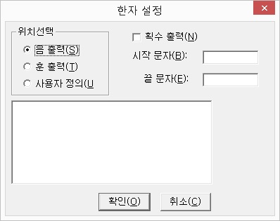
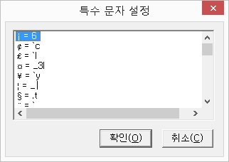
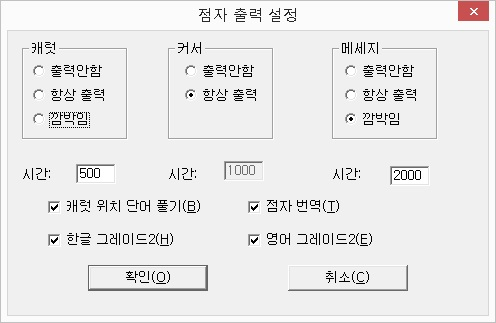
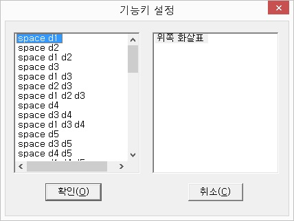
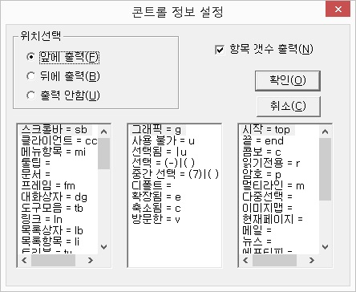

점자 디스플레이 장치에 표시될 한자의 출력 방식을 선택합니다.
한자의 출력방식은 한자의 음과 훈을 각각 한글로
출력하는 방식과 사용자가 지정한 점형으로 출력하는 방식
등 3가지 옵션이 있습니다. 메뉴를 선택하면 '한자 설정'
대화상자가 출력되며, 다음의 설명에 따라 원하는 출력방식을 선택하도록 합니다.

한자의 출력방식을 선택합니다.
1) 음 출력
해당 한자의 음만을 한글로 출력합니다.
예) 한자 '大'의 경우 한글 점자로 '대'라고 음만을 출력합니다.
2) 훈 출력
한자의 음과 훈을 한글로 출력합니다.
예) 한자 '大' 자의 경우 '큰 대'라고 음과 훈을 모두 출력합니다.
3) 사용자 정의
사용자가 지정한 점형에 따라 한자를 출력합니다.
원하는 한자의 점형을 설정하기 위해서는 이 옵션을 선택한 다음 목록상자에 해당 한자와 원하는 점형을 지정해 주어야 합니다.
한자의 출력방식을 '사용자 정의'로 지정한 경우, 원하는 점형을 목록에 등록하도록 합니다. 목록에서는 팝업 메뉴를 열어 [추가와 삭제, 변경] 작업을 할 수 있습니다.
1) 추가
사용자가 원하는 한자의 점형을 추가합니다.
추가 메뉴를 선택하면 값과 내용을 입력하는 대화상자가 출력됩니다. '값' 편집창에는 원하는 한자를 복사해서 한자 그대로 입력하도록 하며, '내용' 편집창에는 컴퓨터 점자 형식으로 사용자가 원하는 점형을 입력하도록 합니다.
* 점형 입력방식은 다음 두 가지 방법 중 하나를 사용합니다.
① 컴퓨터 점자에 해당하는 기호를 직접 입력합니다.
예) "예절 예" 한자를 '3-4' 점형으로 표시하고
싶다면, 컴퓨터 점자 '3-4' 점형에 해당하는 '/(슬래시)' 기호를 입력하도록 합니다. 같은 방식으로 어떤 한자를 '1-5-6' 점형으로 표시하고 싶다면 컴퓨터 점자의 같은 점형인 ':(콜론)' 기호를 입력하면 됩니다.
② 점형을 숫자 형태로 직접 입력합니다.
컴퓨터 점자를 잘 모르거나 컴퓨터 점자를 벗어난 점형을 입력하고 싶다면, 점형을 '^' 기호로 묶어 숫자로 직접 입력합니다.
예) '예절 예' 한자를 '3-4' 점형으로 표시하고
싶다면, <내용> 편집창에 '^34^' 라고 입력합니다.
또한, 두 칸의 점형을 사용하고 싶다면 ',(컴마)' 기호를 점형 사이에 추가해 줍니다.
예) '예절 예' 한자를 '1-2-3-4-5-6'과 '3-4'로
두 칸에 걸쳐 표시하고 싶다면, '^123456,34^'라고 입력합니다.
2) 변경
기존에 등록된 한자의 점형을 수정할 때 사용합니다. '값' 편집창에 수정할 내용을 입력합니다.
3) 삭제
등록된 한자를 삭제합니다.
한자와 더불어 획수까지 출력할 것인가를 선택합니다. 획수 출력을 원한다면 스페이스바를 눌러 체크상자를 선택합니다.
한자를 표시할 때 시작 부분과 끝 부분에 출력할 문자를 지정합니다. 입력 방식은 '사용자 정의'의 입력 방법과 동일합니다.
점자디스플레이 장치에 출력될 특수문자의 점형을 설정합니다.
[특수 문자 설정] 메뉴를 선택하면 현재 설정되어 있는 특수문자가 목록으로 표시됩니다. 목록에서 작업을 원하는 항목에 위치한 다음 <Popup> 키를 눌러 [추가, 변경, 삭제]
등의 작업을 실행합니다.

추가 메뉴를 선택하면 값과 내용을 입력하는 편집창이 나타납니다. '값' 편집창에는 원하는 특수문자를 복사해서 그대로 입력하며, '내용' 편집창에 점자디스플레이 장치에 출력을 원하는 점형을 입력하도록 합니다.
점형을 입력할 때는 컴퓨터 점자를 기준으로 하여 사용자가 원하는 점형에 해당하는 컴퓨터 점자 기호나 알파벳을 입력합니다. 만약, 컴퓨터 점자에 벗어나는 점형을 설정하고자 한다면 점의 번호를 '^' 문자로 둘러싸서 직접 입력하도록 합니다.
예) 어떤 특수문자를 '1-2-3-5'의 점형으로 표시하고 싶다면, '내용' 편집창에 'r'이나 '^1235^'라고 입력하면 됩니다.
기존에 등록된 특수문자의 점형을 다른 점형으로 바꾸고자 할 때 변경 메뉴를 선택합니다. '추가' 대화상자와 동일한 형태의 대화상자가 출력되며, '내용' 편집창에 변경할 내용을 입력합니다.
현재 설정되어 있는 특수문자를 목록에서 지웁니다.
점자출력장치에 표시될 캐럿이나 메세지의 출력방식을 설정합니다.
[옵션] 메뉴를 선택하면 '점자 출력 설정' 대화상자가 출력되며, <Tab> 키나 <Shift-Tab> 키를 사용하여 각 항목을 이동하면서 설정을 변경합니다. 라디오버튼은 방향키를 사용하여 항목을 선택하며, 편집창에는 적절한
값을 직접 입력하도록 합니다.

각 항목에 대한 내용은 다음과 같습니다.
메모장이나 워드패드 등의 캐럿을 가지고 있는
편집기에서 캐럿을 표시할 방식을 선택합니다. 캐럿은 7-8점으로 출력되며, 다음의 세 가지 출력방식 중 하나를 선택합니다.
1) 출력 안함
컴퓨터 화면에 표시된 캐럿을 점자출력장치에 표시하지 않습니다.
2) 항상 출력
캐럿을 점자출력장치에 고정된 형태로 출력합니다.
3) 깜박임
지정한 시간에 맞추어 캐럿을 깜박이는 형태로 출력합니다. 깜박이는 시간은 사용자가 원하는 대로 지정할 수 있으며, 기본값은 0.5초입니다.
캐럿의 출력방식을 '깜박임'으로 설정한 경우 깜박이는 시간을 지정합니다. 입력단위는 1/1000 초입니다. 만약, 1초 단위로 캐럿이 깜박이기를 원한다면 '1000'을 입력합니다.
센스리더의 읽기커서 출력방식을 설정합니다. 설정할 수 있는 옵션은 캐럿과 동일합니다.
커서의 출력방식을 '깜박임'으로 설정한 경우 시간을 지정합니다. 시간의 입력은 1/1000 초 단위로 하며, 다른 옵션을 선택한 경우에 이 편집창은 활성화되지 않습니다.
센스리더가 음성출력하는 각종 메세지들의 점자표시 방식을 지정합니다. 메세지에는 타이틀바 읽기나 현재 시각 알림 등의 음성출력을 의미합니다. 선택할 수 있는 옵션은 다음과 같습니다.
1) 출력 안함
메세지를 점자로 출력하지 않습니다.
2) 항상 출력
센스리더의 다른 기능이 수행될 때까지 메세지의 출력을 유지합니다.
3) 깜박임
지정한 시간 동안 메세지를 점자로 표시하고 지정 시간이 경과하면 점자출력을 원래 상태로 복원합니다.
메세지를 점자로 표시할 시간을 입력합니다. 단위는 1/1000 초이며, 만약 3초간 메세지를 표시하고 싶다면 '3000'을 입력합니다.
캐럿이 위치한 영어 단어를 풀어서 표시할 것인가를 선택합니다.
예) 어떤 문장 중에 'can'이라는 단어가 있다면
기본적으로는 1-4 점형으로 표시합니다. 이 때 캐럿이 'can' 단어에 위치하게 되면 1-4, 1, 1-3-4-5과 같은 형태로 풀어서 출력하게 됩니다.
센스리더의 음성출력을 점자로 번역할 것인가를 선택합니다. 이 옵션이 해제되어 있다면 컴퓨터 점자 형식으로 출력됩니다.
한글의 점자출력시 그레이드2를 적용할 것인지
선택합니다.
영어를 점자로 출력할 때 알파벳을 풀어서 출력할 것인지 그레이드2 형태로 출력할 것인지 선택합니다.
점자출력장치에서 컴퓨터를 제어할 때 사용할 기능키와 기능을 설정합니다.
[키 설정] 메뉴를 선택하면 '기능키 설정' 대화상자가
열립니다. 대화상자에는 점자출력장치에서 사용 가능한
기능키 목록과 각 기능키에 해당하는 기능 목록이
표시됩니다.

점자출력장치에서 사용할 수 있는 기능키를 표시합니다.
<Popup> 메뉴를 열어 [추가, 변경, 삭제] 등의 작업을 할 수
있습니다. 기능키에 어떤 기능을 할당하기 위해서는
방향키를 사용하여 원하는 기능키에 위치한 후, <Tab>
키를 눌러 기능 목록으로 이동합니다.
1) 추가
사용하기 원하는 기능키가 목록에 없을 때 새로운
기능키를 추가합니다. [추가] 메뉴를 선택하면 "사용할
기능키를 입력하세요"라는 음성 메세지가 출력됩니다.
이 때, 점자출력장치에서 사용하기 원하는 기능키를 누르면
기능키 목록에 해당 기능키가 표시됩니다.
2) 변경
변경하고 싶은 기능키가 있을 때 사용합니다. [변경]
메뉴를 선택하면 "변경을 원하는 기능키를
입력하세요"라는 음성 메세지가 출력됩니다.
점자출력장치에서 변경을 원하는 기능키를 누르면 해당
기능키가 목록에 표시됩니다.
3) 삭제
목록 중 현재 위치한 기능키를 삭제합니다.
* 브레일노트 출고시의 전면키 순서는 왼쪽부터 thumb2,
thumb1, thumb4, thumb3 입니다. 사용자들은 필요에 따라 원하는
대로 전면키의 순서를 변경할 수 있습니다. 이와 관련된 내용은 브레일노트 사용법을 참고하십시요.
각 기능키에 해당하는 기능을 지정합니다. 기능
목록에서는 <Popup> 메뉴를 열어 키 추가, 기능 추가, 삭제
등의 작업을 할 수 있습니다.
1) 기능 추가
현재 기능키 목록에서 선택된 기능키에 기능을 지정합니다. 이 메뉴를 선택하면 '기능 추가' 대화상자가 새롭게 열립니다. 기능들이 표시된 목록에서 원하는 항목에 위치한 후
'확인' 버튼을 누르면 선택한
기능이 '기능키 설정' 대화상자의 기능 목록에 표시됩니다. 기능은 하나의 기능키에 여러 가지 기능을 중복해서 지정할 수도 있습니다.
2) 키 추가
기능키 목록에서 지정한 키를 눌렀을 때 윈도우즈에서 동작할 기능키를 지정합니다. 예를 들어, 점자출력장치에서 Space-1-2-3-4 코드를 누르면 윈도우즈에서 <Window-M> 기능키가 동작하도록 설정하고 싶다면 '키 추가' 기능을 사용합니다.
'키 추가' 대화상자가 출력되면 Control, Insert, Window
등의 조합키 중에서 사용을 원하는 키를 선택한 다음 '기능키
입력' 버튼을 누릅니다. "사용할 키를
입력하세요"라는 음성 메세지가 출력되면 키보드에서
조합키와 같이 눌러질 키를 입력합니다. 마지막으로 '확인'
버튼을 누르면 기능 목록에 지정한 조합키가 등록됩니다.
3) 삭제
현재 설정되어 있는 기능을 삭제합니다.
컨트롤을 점자출력장치에 표시하는 방법을 설정합니다.
[컨트롤 출력 설정] 메뉴를 선택하면 '컨트롤 정보 설정' 대화상자가 출력되며, 컨트롤의 표시 위치와 컨트롤 속성 표시 점형 지정 등의 작업을 할 수 있습니다.

컨트롤을 점자출력장치에 표시할 때 위치를 지정합니다.
1) 출력 안함
컨트롤을 점자로 표시하지 않습니다.
2) 앞에 출력
컨트롤 정보를 항목 앞에 출력합니다.
3) 뒤에 출력
컨트롤 정보를 항목 뒤에 출력합니다.
목록상자 등의 컨트롤에서 항목의 갯수를 출력할지 선택합니다.
점자출력장치에 표시할 컨트롤의 점형을 설정합니다. 추가와 삭제는 불가능하며, <Popup> 메뉴를 열어 사용자가 원하는 점형으로 변경할 수 있습니다. 점형을 지정할 때는
컴퓨터 점자로 입력해야 합니다.
선택 여부와 확장, 축소 같은 컨트롤의 상태를 점자로 출력할 점형을 지정합니다. <Popup>키를 눌러 메뉴 중 [변경] 항목을 선택하여 사용자가 원하는 점형으로 변경할 수 있습니다.
읽기 전용과 암호, 멀티라인 등의 컨트롤 스타일을 표시할 점형을 지정합니다. [변경] 팝업 메뉴를 사용하여 사용자가 원하는 점형으로 변경할 수 있습니다.